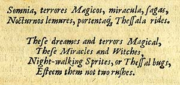
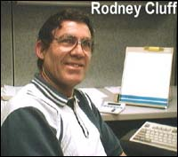
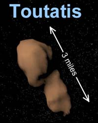

Reggie lo tenía claro

Un hombre notable llamado Reginald Scot (1538-1599) era juez de paz en Kent, Inglaterra. Su libro principal, El Descubrimiento de la Brujería, hace una exposición esclarecedora sobre las creencias y supersticiones de su época. Con una perspicacia -y valor – muy adelantado a su tiempo, buscó detener las espantosas persecuciones que, principalmente en los distritos rurales, hacía a cualquier persona anciana y solitaria pasible de acusaciones de brujería. Una vez inculpado, el acusado quedaba esencialmente condenado a la cárcel o a la ejecución. Había pocas posibilidades de escapar de las barbaridades consiguientes. El trabajo de Scot tenía la intención de ser un argumento racional cuestionando la existencia de brujos, y también ser una reacción y protesta contra la fanática persecución de inocentes por parte de un clero supersticioso.
Esta colección de mágicos textos fue publicada aproximadamente al mismo tiempo que John Dee estaba llevando a cabo sus experimentos místicos. (Dee —1527-1608— fue un brillante académico que gozó del favor de la reina Isabel, pero que cayó en manos de timadores y él mismo se convirtió en uno). La intención de Scot fue oponerse a la locura de la caza de brujas de la Inquisición ridiculizando los textos y sus implicaciones. También atacó a la iglesia católica en general por sus prácticas supersticiosas. El autor sostenía que la persecución de aquellos acusados de brujería era contraria a los dictados de la razón así como a los de la religión, y dejaba la responsabilidad en la puerta de la iglesia romana.
En aquella época era creencia general que las brujas podían, y hacían –para citar a un historiador contemporáneo
[…] sacrificar a sus propios hijos al diablo antes del bautismo, sosteniéndolos en el aire hacia él y clavando entonces una aguja en su cerebros […] Cometían adulterios incestuosos con espíritus […] Comían la carne y bebían la sangre de hombre y niños abiertamente […] mataban el ganado de los hombres […] Embrujaban el maíz de los hombres […] Viajaban y volaban por el aires trayendo tormentas y provocando tempestades […] Tenían relaciones sexuales con un diablo llamado Incubus y tenían hijos con él, los que a su vez se convertían en los mejores brujos.
Scot citó a Horacio, de cuyas creencias hacía eco:
Estos sueños y terrores mágicos.Estos milagros y brujas,Espíritus que caminan por la noche, o insectos de los cardosNo les dedique dos apuros
Muchos de sus contemporáneos saludaron con cautela su razonable exposición de la superstición irracional, ya que, como uno de ellos lo expresó:
[…] desenmascara diversas egregias imposturas, y en algunos capítulos principales y en pasajes especiales da en el clavo con un testigo.

El rey Jaime VI de Escocia, quien era muy inclinado a buscar y ejecutar brujas, sucedió a Isabel I en 1603 y por lo tanto se convirtió en Jaime I de Inglaterra. Este intolerante y fanático monarca describió el libro de Scot como “condenable” y ordenó que todas las copias del El Decubrimiento fueran quemadas. Las copias que permanecieron son ahora muy raras. Aun antes, en 1586, un decreto de la tristemente celebre Star Chamber había endurecido grandemente las leyes de censura. A pesar de esto el libro fue reimpreso muchas veces y contribuyó mucho en el cambio de pensamiento que eventualmente terminó con la persecución de brujas en Inglaterra y Escocia.
La obra completa -cubriendo temas como: encantamientos, el nombre de los demonios, ángeles y otras “palabras poderosas”, trucos de magia, astrología, alquimia, adivinación, embrujos, rituales, sábados de brujas, magia bíblica y egipcia y más- fue investigada con tal integridad académica que el Discovery sigue siendo una muy citada fuente primaria para aquellos interesados en las ciencias ocultas, creyentes o no. El texto presenta evidencia lógica para los delirios de las bujas o simple fraude.
Para la satisfacción de los animadores legítimos, el libro también expresa respeto por el arte de la prestidigitación, el cual examina usando ese mismo término. Scot enfatiza que considera estos entretenimientos como favorables para el mejoramiento de la sociedad y sus ciudadanos y no como trabajo del diablo o sus aliados. ¡Qué placentero!
Soy afortunado en poseer una tercera edición -1665- de este libro.
Un duelo con Dios debe ser lo que sigue
Russell Winer de Tampa, Florida, vio que en nuestro comentario del 16 de abril del 2004 un lector mencionaba la prohibición constitucional en Tennessee para que un no-creyente desempeñe un cargo público. Investigó y encontró que la sección 1 también descalifica a ministros y a sacerdotes:
ARTÍCULO IX - Descalificaciones:
Sección 1. Ya que los ministros del Evangelio están por su profesión, dedicados a Dios y al cuidado de almas, y no deben ser distraídos de los grandes deberes de sus funciones; por lo tanto, ningún ministro del Evangelio, o sacerdote de cualquier denominación que sea, será elegible a un asiento en cualquier Cámara de la Legislatura.
Sección 2. Ninguna persona que niegue la existencia de Dios, o un estado futuro de recompensas y de castigos, ocupará ningún cargo en el departamento civil de este estado.
La sección 3 es interesante también:
Sección 3. Cualquier persona que, después de la adopción de esta constitución, luche en un duelo, o con conocimiento sea el portador de un desafío para luchar un duelo, o envíe o acepte un desafío para ese propósito, o que sea un ayudante o un cómplice en luchar un duelo, será privada del derecho de ocupar cualquier oficina honoraria o rentada en este estado, y recibirá otro castigo, de la manera que la legislatura puede prescribir.
¿Son estas materias de valor y consideración iguales? ¿El combatir en duelo y la creencia en un deidad?
Astuto, astuto
El lector Peter Donnelly nos demuestra que no hay nada nuevo bajo el sol:
De casualidad encontré lo siguiente en una colección de bromas antiguas procedentes del compendio del siglo IV conocido como Philogelos, o el amante de la risa:
Volviendo a casa de un viaje al extranjero, un hombre visitó a un profeta incompetente y le preguntó acerca de su hogar, y él dijo: “Están todos sanos, incluyendo a tu padre. Cuando el hombre dijo, “Pero hace diez años que mi padre murió “, el profeta contestó, “Tu no conoces a tu verdadero padre.”
Peter, he escuchado a “lectores síquicos” contemporáneos usar la misma estratagema. Por ejemplo, conjeturan que su sujeto tenía un hermano mayor, lo cual es negado. El lector entonces responde, “Ah, usted nunca supo sobre él. Nació muerto.”
Convengo, ¿No hay nada nuevo?
Ese engaño aun más descubierto
El lector Valentijn van den Brink, de los Países Bajos, solucionó para nosotros el resto del asunto ” Transparente Engaño Religioso”
Mirando la fotografía manipulada del esqueleto recordé haberlo visto antes y que era mesolítico. Una rápida búsqueda en Google hizo el resto. Aquí hay un sitio con alguna información: http://museums.ncl.ac.uk/flint/archrit.html

Sí, comparen la imagen con la penúltima imagen de la semana pasada y tienen la prueba. Ya lo he ducho antes: ¡tenemos un muy valioso recurso en nuestros lectores, que no son sólo numerosos sino también muy inteligentes y tenaces! ¡Gracias Valentijn!
¡Y los embaucadores religiosos ni siquiera tuvieron que hacer los trucos necesarios con la foto! Ya se los habían hecho, como una broma, pero eso no los detuvo de usarlo como prueba de un milagro, por supuesto. El lector Brandi Weed nos envía al sitio web “Worth1000”, donde vemos que este fue uno de los ganadores en un concurso de manipular gráficos. Ahí nos enteramos de que los programas Photoshop 7, Painter 7, Freehand, Wacom y Akloo 4.1 fueron usados para crear esta broma. Vayan a: http://www.worth1000.com/view.asp?entry=18533&display=photoshop para verlo todo.
¡Oigan! Si hay cristianos por allí riéndose sobre ese pesado celo de los musulmanes para probar que el Coran dice la verdad, sólo recuerden que hay otra expedición que realmente se está formando par ir al arca de Noe que los fieles creen que verán posada encima del monte Ararat - a 17.800 pies (5.400 metros) de alto – lo cuál significa que la inundación bíblica tuvo que encontrar una porción enorme de agua en alguna parte - casi 700 millones de millas cúbicas, para hacer flotar a Noe y a su parque zoológico hasta allá arriba. También, ver Génesis 6:4, donde dicen a los cristianos que poco antes de que Noe zarpara, “había gigantes en la tierra en esos días.” ¿Los mismos gigantes de los cuales habla el Coran?
Y también está el agua que se convierte en vino, y montones de otros puntos que podríamos discutir
Llamen a los abogados
El lector Carlton B. Morgan nos escribe:
Simplemente debo contarle esto, aunque no estoy seguro si puede utilizarlo. Mi hermano y yo tenemos el hábito de llevar a nuestra madre a una taberna en Cwmbran, País de Gales, para el almuerzo dominical. Mientras esperamos nuestra comida, mi hermano y yo jugamos a menudo en una máquina que ofrece varios concursos. Uno de los juegos es del tipo “serpientes y escaleras”; si uno se las arregla para llegar al final del juego se gana un modesto premio. Las preguntas son de conocimiento general, opción múltiple. Dos equivocadas y una….buena, generalmente. Hace algunas semanas, estábamos jugando y la pregunta siguiente surgió:
¿Qué hizo famoso a Uri Geller en los años 70?
Las opciones que se nos ofrecían eran las siguientes
Doblar cucharasGirar platosSer un coño
Por supuesto escogimos Doblar cucharas, ya que las otras respuestas evidentemente no eran, uhhhh, la pedida. Sé que Uri es un notorio pleitista ¿no querrá demandar a la empresa que fabricó la máquina de juegos?
Señor Morgan, estoy seguro de que Geller ha expresado su escándalo y horror ante esta invasión de su privacidad, que ha disparado citaciones por todos lados y que ha chillado acerca de esto a la prensa y a sus abogados. Es una persona tan sensible, usted sabe. ¿Y tímida?
La conexión TM
El lector David Bleines comenta:
Me interesó ver su comentario sobre Parálisis del Sueño en su columna, la que siempre espero ansiosamente los viernes. En un momento de mi vida tenía experiencias bastante frecuentes de esto, que comenzaron cuando era lo suficientemente joven y tonto como para involucrarme en la Meditación Trascendental, pasando un par de los años trabajando para el movimiento de TM en Europa, y meditando por períodos largos.
Una de las afirmaciones de TM, que tienden a ser más difundidas dentro del movimiento que afuera, es que una de las muestras de que la iluminación se acerca es el “sueño testimonial” es decir, estar aparentemente lúcido en un sueño, y la parálisis del sueño se puede considerar ciertamente en estos términos. También era creído dentro del movimiento que los rakshashas (demonios hindúes) pueden invadir a los que dan pasos grandes hacia su propia iluminación y el bien de toda la humanidad. ¡Qué tonto me parece eso ahora! Mis experiencias de ser paralizado, encontrarme imposibilitado de respirar y tener un gran peso en el pecho y/o el abdomen que parece intentar entrar en mí, también parecen encajar absolutamente bien. Puede ser un fenómeno absolutamente perturbador.
Desde que tropecé con el concepto de la parálisis de sueño, e hice alguna investigación en Internet sobre ella, las cosas llegaron a estar mucho más claras. Mis experiencias parecen ser experiencias de la parálisis de rango medio - alguna gente, parece, tiene alucinaciones visuales y auditivas también. Hay mucho sobre ella en la web si uno busca, no obstante. Parece que la gente interpreta estos fenómenos dentro de las características culturales de su día. Me parece claro, habiendo tenido estas experiencias, que los informes de incubi y succubi pueden ser explicados racionalmente considerándolos como experiencias de la parálisis del sueño, y, en años más recientes, los secuestros por extraterrestres, exámenes médicos, etc., pueden ser atribuidos a menudo a la misma fuente. Y, por supuesto, como su corresponsal sugiere, los fantasmas.
La parálisis del sueño, me informa mi investigación, es sufrida con mayor o menor frecuencia y/o grado por una minoría significativa de la gente en algún momento de sus vidas - es bastante normal en realidad como para no ser considerada como desorden en absoluto, ciertamente no uno que necesite cualquier clase de intervención médica o psicológica, y tengo la esperanza de que usted tranquilizará a sus lectores que han tenido tales experiencias (y habrán muchos) que no son realmente un problema.
Todo lo que se necesita en realidad es estar conciente de lo que el fenómeno es. Desde que dejé la meditación, la frecuencia de mis experiencias ha caído drásticamente, pero cuando regresa estoy suficientemente lúcido, después de unos segundos, para pensar “maldita parálisis del sueño otra vez”, y despertarme yo mismo.
David, hay todavía decenas de miles de victimas de la estafa TM por ahí que, como los engañados por la cientología, nunca despertarán no importa cuan fuerte batamos el tambor. Como tú sabes, es consolador ser aceptado en un culto, recibir la camaradería de los otros que han decidido rendir su voluntad y convertirse en ovejas.
Veganismo no tan peligroso
El lector de Michigan Dan Scholnik nos escribió acerca de la mención la semana pasada de charlatanería en Vegetarian Times. Sus comentarios fueron similares a muchos otros sobre esta materia.
[…] desde que dejé de comer carne (cuando estaba en la escuela) me ha desilusionado mucho descubrir la fuerte conexión entre el vegetarianismo y las tonterías de la Nueva Era. Abandoné Vegetarian Times hace mucho tiempo debido a artículos exactamente como el mencionado. Afortunadamente, comer sólo materia vegetal no causa falta de pensamiento crítico. Mi esposa puede atestiguar que reniego de la religión, la seudo ciencia y la medicina “alternativa” seguido y en voz alta.
Gusto de escuchar eso, Dan.
El misterio SWT resuelto
La semana pasada, escribí que: “No he podido descubrir qué significa ‘SWT’, pero creo que es cierto modificante adulador usado al referirse a esta versión de una deidad”. El lector Robert Matthews de Halifax, Nueva Escocia, Canadá, me informa, al igual que varias otras personas:
Se trata exactamente de eso. SWT está por Subhana wa Ta’ala, que se traduce como “que sea glorificado y exaltado”, aproximadamente. No soy un experto en tales materias, pero parece que cuando los musulmanes pronuncian el nombre de su deidad, clavan a menudo esa frase adulona, quizás para asegurar a dicha deidad que no tomaban su nombre en vano como usted o yo podemos hacer diciendo un “¡Dios mío!” cuando vemos un accidente de coche. Hacen generalmente la misma cosa al pronunciar el nombre de su profeta principal, Mahoma. Siguen comúnmente su nombre con la frase “la paz sea con él” abreviado a menudo en inglés “PBUH” por lo que estoy seguro debe ser la misma razón: demostrar que no están diciendo su equivalente del “¡Jesucristo!” de una manera blasfema.
Parece que uno debe tener mucho cuidado en este negocio de la religión. Los dioses no son sólo celosos y petulantes, sino inseguros también. Reverencias y disculpas constantes son requeridas. Recuerdo que mi abuela paterna nunca se atrevió a asumir que hubiera cualquier cosa que su dios permitiría. Era siempre “Dios mediante” o “si Dios quiere”, antes de cada acción propuesta o anuncio de intención. Vivió en el miedo constante de ofender a este fantasma.
Un poco de autobombo
El lector y miembro de JREF Ernie Garrett nos envía este elogio:
Yo solía ser una persona devotamente religiosa y supersticiosa. Nunca creí que la gente tuviera razón alguna para mentir sobre cosas como energías psíquicas u ovnis, así que terminé creyendo una cantidad ridícula de cosas. En un punto, miraba un programa de televisión sobre todas las predicciones del fin mundo que decían que el 2000 sería el año fatal. Recuerdo haber llorado porque las creía.
Pero, ay de mi, oí hablar usted. No recuerdo cómo o donde, pero terminé visitando su sitio web y leyendo sus comentarios. La idea que todas estas cosas locas -que nunca vi yo mismo y de las que solamente escuche de otros - podrían realmente ser tonterías, parecía chocante pero al mismo tiempo tenía mucho sentido.
Han pasado algunos años, y ya puedo considerarme un pensador crítico. Soy mucho más feliz y más productivo debido a esto. Le tengo que agradecer por eso, como usted ha oído por algunas otras cartas recientes. Sé que debe cansarse de tratar con la corriente sin fin de absurdos que vienen a su encuentro cada día, pero por tener la frescura y la energía incansable para hacerlo, usted se ha convertido en uno de mis héroes personales. Usted está tocando vidas y está haciendo más por la raza humana que todos esos supuestos místicos combinados. Si CUALQUIER PERSONA pudiera vivir por siempre – y no fuera yo – lo escogería a usted.
Siga con la buena obra y gracias.
Debe ser un poco difícil para la mayoría de ustedes entender cómo un humano pensante puede ser llevado a las lágrimas sobre la creencia en tales materias. Yo no tengo problema en entender eso, he visto tal temor muchas veces de gente que no conoce nada mejor. Hace muchos años, hice un favor a un amigo mago que estaba con demasiados compromisos me y pidió que lo reemplazara en un show en una sinagoga local. El rabino allí era una sujeto amable que me hizo sentir muy cómodo, me equipó con el yarmulke apropiado, y charlamos mientras esperábamos la hora para mi show. Su secretaria interrumpió en un punto, y él me pidió que lo excusara mientras conversaba en privado con una mujer visiblemente conmovida y con ojos lacrimosos que había pedido hablar urgentemente con él. Volviendo de esa conferencia, sacudió la cabeza consternado. “Ella es una doctora en historia, enseña en NYU y es muy inteligente”, me dijo, “pero está en pánico porque encontró que la caja de la sal kosher que utilizaba para cocinar fue elaborada con goma animal, y está convencida de haber cometido un pecado grave por este descuido. A veces me pregunto […] ”
Sí, los rabinos son gente sabia.
Sentido común tampoco se enseña
Willie, “de la bella Escocia”, escribe:
Pensé enviarle este recorte del periódico gratuito del METRO (de fecha viernes, 21 de mayo del 2004) disponible en todo el buen transporte público en y alrededor de Escocia:
Una síquica ha instalado una escuela para enseñar a la gente el arte de la segunda visión. Emma King afirma que su curso de un año puede desarrollar el sexto sentido de cualquiera y convertirlo en un síquico consumado. Los temas en el curso - que se ha lanzado en Glasgow, Edimburgo y Dunfermline - incluyen análisis de sueños, clarividencia y sanaciones. ¿Me pregunto cuántos meses tomará para que los estudiantes predigan si pasan o desaprueban?
Siga con el buen trabajo.
¡Ah, pero aparentemente Emma no enseña precognición, Willie! ¿Quizás por buenas razones?
Turismo realmente bajo
Rodney M. Cluff es el autor de “El mayor secreto del mundo: ¡Nuestra Tierra es Hueca!”. El señor Cluff trabaja en el mundo verdadero como programador / analista de computadoras, y conduce la investigación de evidencias de planetas huecos como hobby de fantasía. Cree no solamente que la tierra es hueca sino que -siguiendo lo que él llama evidencia “científica”, incluyendo las fotos de satélite de los “agujeros polares”, análisis de las observaciones de los exploradores polares, análisis de datos de terremotos y mucho más, juntado con evidencia de las escrituras- concluye que ¡las diez tribus perdidas de Israel ahora pueden ser encontradas dentro de la Tierra!
Pero esperen ¡hay más! Esta no inesperadamente abarca-todo teoría nos da el origen de los platillos voladores, la causa de terremotos, la localización del trono de rey David y de la ciudad de Enoch, y de muchos más artículos que habíamos perdido. Quizá, sólo quizá, todos esos calcetines huérfanos serán también descubiertos por el explorador Cluff.
No desea ir allí solo, no obstante. Tiene una oferta para una expedición al centro de nuestra Hueca Tierra. Cluff dice que ha fletado un “rompehielos nuclear” del 26 de junio al 19 de julio del 2005, para llevar a 108 pasajeros para encontrar la abertura polar, a un precio entre $18.950 a $20.950 por persona. En caso de que los escépticos tiendan a dudar de su historia, nos asegura que: “hay alguna gente en el gobierno que está enterada de la abertura a la tierra interna pero han intentado mantener ese conocimiento oculto al público”, y él tiene “indicios de que los militares de Estados Unidos lo conocen.” ¡Aha! ¡Así que por eso no sabíamos nada acerca de todo esto! “Creemos que en esta expedición nosotros, la gente, tenemos el derecho a saber”, dice.
Para los que duden sus nobles razones para acarrear gente al polo en busca de un agujero enorme, Cluff dice que hay creencias religiosas que espera sean probadas con la expedición. Dice que la Tierra interior es la localización del “Trono del rey David” de la Biblia, y que ” el reino político de Dios” se localiza allí. También cree que el jardín perdido de Eden está en la Tierra hueca y que sus habitantes son amistosos, altamente civilizados, y la mayoría miembros de las diez tribus perdidas de Israel. En cuanto a arreglos de iluminación, dice que ” el sol interno” está situado dentro de la Tierra, es el trono de Jehová y un paraíso para los muertos.
Parece que Cluff no está al tanto de que aviones sobrevuelan regularmente los polos de la Tierra y no han visto enormes huecos ahí. Eso podría simplificar la expedición y reducir mucho los costos.
Hay más todavía. Cluff dice que espera probar que los ovnis se originan desde la Tierra interior y que los vientos solares y el sol interior causan las auroras boreales. Sólo piensen en el alcance de esta investigación. Estoy seguro de que el resfriado común, Nostradamus, la cera de los oídos, Sophia Loren, las cartas del tarot, todo puede ser explicado por Rodney Cluff.
Pero, señor Cluff, no nos llame; nosotros lo llamaremos.
Gran roca acercándose
¿Recuerdan a Billy Meier, el hombre que está en contacto con los ovnis y los “pleyadenses”? Vean www.randi.org/jr/032604why.html, si desean refrescar su memoria sobre este miembro del desfile de idiotas que pasa por aquí. Bien, Billy ahora nos dice que el 29 septiembre del 2004, este pedazo de asteroide llamado “4179 Toutatis”, 3 por 1.5 millas de tamaño, debe golpear la Tierra. ¡Ay! ¡Tiempo del pánico!
Ahora los hechos reales: esta aproximación será la más cercana de este siglo de cualquier asteroide conocido, por lo menos tan prominente como Toutatis, y tengo la idea de que aunque los tabloides estarán ansiosos por levantarlo, y cierta TV y los anfitriones de radio serán harán un escándalo sobre él, esta roca con forma de maní gigante se deslizará cerca silenciosamente, como ha hecho regularmente cada cuatro años o así un sinnúmero de veces. Este paso será a alrededor de un millón de millas de la Tierra, cuatro veces la distancia de nuestra luna; astronómicamente hablando, es bastante cerca.

Sólo para dejarles saber la naturaleza distintiva de este asteroide, aquí hay una animación de su peculiar patrón de giro.
La visita de septiembre del 29 sin duda alguna dará a los astrónomos la oportunidad de proveernos de más detallada información sobre el visitante. Así lo espero. Probablemente saldré e intentaré darle una ojeada a la roca, un privilegio negado a los que estén temblando debajo de sus camas cuando pase cerca.
Más parálisis de sueño
El lector Randall Wald nos cuenta:
Desde hace algunos años he tenido periódicamente episodios de parálisis del sueño. La cosa extraña es yo nunca los imaginé paranormales en modo alguno. Después de que ocurrieran uno o dos pensé, “Vaya, debo tener alguna clase de condición médica extraña. Espero que no sea seria.” En cierto nivel, mi mente incluso comenzó a jugar con estos acontecimientos de la parálisis como las bromas que eran. Mi alucinación inducida por la parálisis del sueño preferida implicó una variedad de criaturas coloridas y extrañamente formadas que flotaban alrededor de mi cama. Les dije: “Escuchen muchachos: Sé que sólo son alucinaciones así que váyanse.” Todos salieron, a excepción de uno, que remarcó, “Guau, de seguro que era una colección extraña de criaturas imaginarias, ¿no te parece?” Respondí, “Tú no me engañas, ¿sabes? Estoy perfectamente enterado de que eres imaginario también”. La criatura suspiró y dijo “Bueno, valga el intento” y desaparecido también.
Todavía no estoy completamente seguro por que era tan escéptico como para reconocer inmediatamente las alucinaciones como lo que eran. De niño siempre estuve interesado en el ocultismo, aunque no estoy tan seguro de cuánto creía. Una cosa que si creía, sin embargo, era en el tablero Ouija. Durante casi dos semanas consulté el tablero todos los días con mi hermano después de la escuela. Hasta hice una pequeña versión en papel que cabía en mi mochila para así poderle hacer preguntas en el auto camino a la escuela. En cierto momento mi papá se dio cuenta que esto había ido demasiado lejos y me explicó el efecto ideomotor. Creo que debe haberlo demostrado diciendo: “Sostén esa tablilla sin hacer ninguna pregunta y mitra lo que pasa. Para el caso, piensa acerca de moverla a la izquierda sin en realidad tratar de moverla ahí”. Por alguna razón esta explicación me convenció y reconocí en la Ouija el juego que era. Ahora que soy mayor, evoco esas experiencias tempranas con pesar y espero que, si alguna vez tengo hijos, pueda hacerlo así de bien por ellos.
De cualquier modo, no estoy completamente seguro de cuánto efecto usted personalmente ha tenido en mi escepticismo. Recuerdo que mi padre me llevo una vez a una convención de magia en la que usted demostró el doblado de cucharas (creo que pedimos su autógrafo al final) pero no recuerdo cual fue mi reacción en ese momento. En todo caso estoy seguro de que hay mucha gente cuyos padres no son tan partidarios del escepticismo como fueron los míos y para ellos usted debe ser la única esperanza. Siga con el buen trabajo.
¿Y para terminar? ¡Buenas noticias!
Acabamos de enterarnos por Flavio Rizzardi en Italia que nuestro excelente amigo Piero Angela, hace pocos días, ha sido absuelto del cargo de difamación que le habían hecho los doctores de la Asociación Italiana de Homeopatía. Hace dos años su excelente programa de televisión Superquark emitió un segmento altamente crítico de la homeopatía. Después de un largo juicio, la jueza llegó a la conclusión que la homeopatía no tiene ninguna base científica. La llamó “una medicina de emociones” y rechazó los cargos.
Tendremos una completa cobertura de esta bienvenida victoréala próxima semana.
Pregunta el señor Rizzardi: “¿Significa esto que sus habilidades médicas están infinitesimalmente diluidas?”
Y Michael Shermer nos informa:
Para quien esté interesado, hemos publicado en nuestro sitio web, www.skeptic.com, nuestro “Como falsificar fotografías de ovnis” tomado de la revista Jr Skeptic, escrita y fotografiada por el director de arte de Skeptic Pat Linse. A mis ojos, las fotos de ovnis de Pat sobrepasan largamente cualquier cosa que Billy Meier haya fotografiado, verdadera o falsa. Por favor, siéntense en libertad de mencionar esta página a grupos de ovnis y escépticos.
¡Hecho!

Comentarios
Comments powered by Disqus